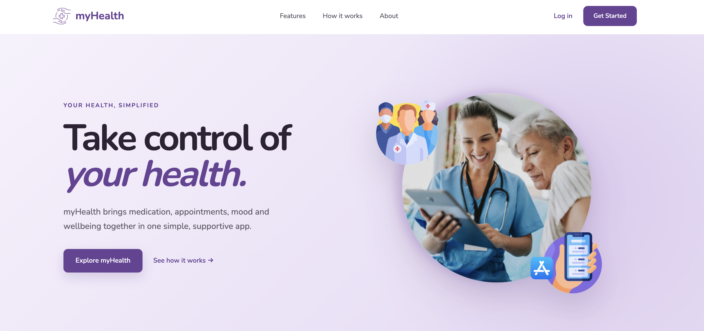
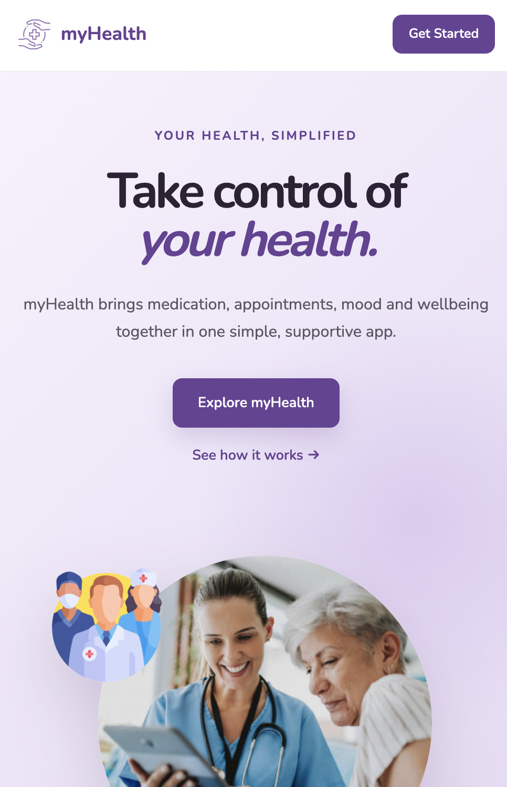
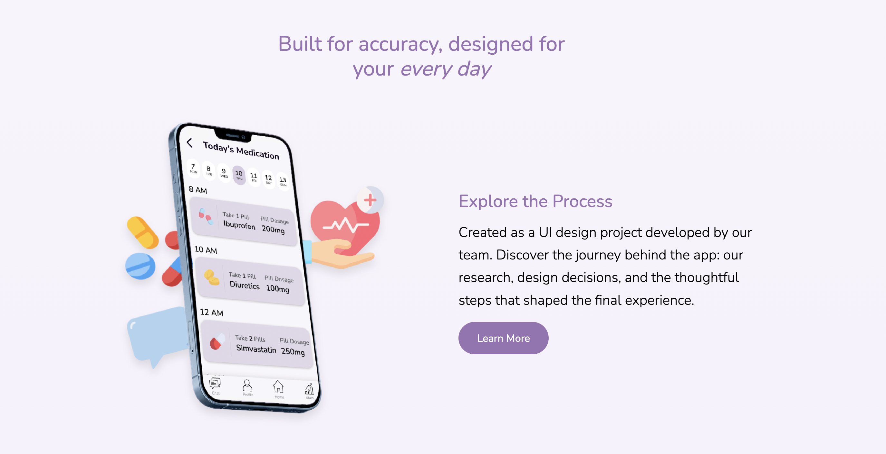

Health App Website
An independently designed and developed companion website created to extend the myHealth mobile application into a responsive web experience.

01 · OVERVIEW
Extending the mobile experience to web.
The myHealth website was created as a companion experience for our mobile health application. The website introduces the concept, explains the key features and gives users a clearer overview of the product.
While the mobile application was developed as part of a team project, I independently designed and developed the companion website.
This gave me the opportunity to take the visual direction of the application and translate it into a responsive website while making my own decisions around layout, typography, content and interaction.

02 · MY ROLE
Taking the project further independently.
My main responsibility for this part of the project was designing and developing the companion website independently.
I worked across both the visual design and front-end development, translating the ideas and visual language from the mobile application into a web-based experience.
This allowed me to combine my interest in UI/UX design with my technical skills in front-end development.
03 · DESIGN DIRECTION
Creating a calm and approachable experience.
The website was designed to reflect the supportive and accessible nature of the myHealth application.
I used a soft visual style with rounded components, generous spacing and clear typography to make the information feel approachable and easy to navigate.
The layout was also structured into clear sections so users could quickly understand what the product does and how it could support their everyday health and wellbeing.

04 · WEBSITE STRUCTURE
Designing a clear journey through the product.
The website was structured around the information a potential user would need when first discovering myHealth.
The homepage introduces the product before moving into its main features, the people it is designed to support and examples of how the application can be used.
The navigation also provides direct access to key areas of the website, helping users move through the content without unnecessary complexity.
05 · DEVELOPMENT
From design concept to working website.
I developed the website using HTML and CSS, with Tailwind CSS used to help create the responsive layout and reusable styling.
The implementation focused on translating the visual design into a functional web experience while ensuring that content could adapt across different screen sizes.
I also incorporated multimedia elements including application imagery and walkthrough videos to make the website feel more interactive and engaging.
06 · PROCESS
Building on the original design process.
The website was informed by the research and design work carried out during the wider myHealth project.
The original project explored existing healthcare applications, the needs of older adults, heuristic evaluation and paper prototyping before developing the final mobile interface.
I used this existing design direction as a foundation while independently deciding how those ideas could be communicated through a web experience.
07 · REFLECTION
What I learned.
Developing the myHealth website gave me the opportunity to combine UI/UX design with practical front-end development.
I learned how to take an existing product concept and adapt its visual language into a different platform without losing the core identity of the project.
Working independently on the website also gave me more responsibility for decisions around layout, content, visual presentation and implementation.
Most importantly, the project helped me understand how design and development can work together to create a complete digital experience.